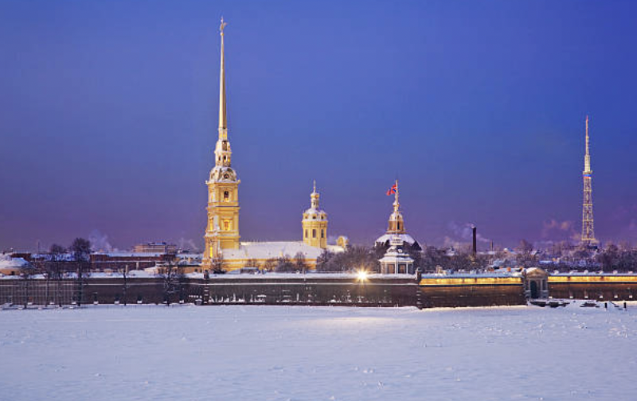

Religious Buildings
 Dormition Cathedral of the Mother of God (1475) in the Moscow Kremlin (the coronation place of Russian tsars, inauguration site for Putin)
Dormition Cathedral of the Mother of God (1475) in the Moscow Kremlin (the coronation place of Russian tsars, inauguration site for Putin)
 St. Basil's Cathedral of the Mother of God (1555) in the Red Square, Moscow
St. Basil's Cathedral of the Mother of God (1555) in the Red Square, Moscow
(commissioned by Ivan IV, the Terrible to commemorate his military victory over Kazan Kingdom),
this is the picture from 1988 when President Reagan visited Gorbachev to support his reforms.

Peter and Paul Fortress (1733) in St. Petersburg (western baroque style, the burial site of the Romanov Family, the major political prison in the Russian Empire)